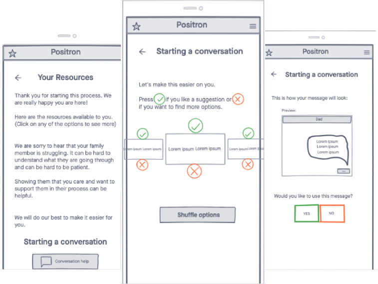

What is Positron?
In physics, a positron is the antimatter opposite of regular electron.
A positron can annihilate negatively charged electrons with a spectacular burst of energy.
The Positron app helps you generate a surge of positive energy for anyone who might need a power-up to their mental health.
Whether you're suffering or you simply care about someone who is, we're positively ecstatic to be part of your relationship.

Why Are We Here?
Even though we're anti-matter, Positron lets you start a conversation with the people who matter most to you.
We like providing resources that people can access on their own, but we really love helping to get others involved. As a social species,
humans are meant to be together and share even the intimate parts of their lives and mental well-being with others. Think of it as a moment
to sit around the campfire with a member of your tribe and talk it out. Our ancestors literally survived the Ice Age by banding together
and talking it out. If you've forgotten the art of inviting others in, this is a wonderful place to start.
Positron is a safe place to reach out for help, or to reach out and offer help to someone you care about. We all need it. Mental health
isn't something that some people have and other don't--we all have brains with different degrees of health depending on the day,
the hour, or the second.
You don't have to be diagnosed with a disorder to ask for a helping hand. And you can always ask someone else how
they're doing. Like, how they're really doing. And that's basically our reason for existing. How are you doing?
What We Do
Positron has a library of conversation starters you can use to strike up a natural but meaningful conversation with a spouse, a coworker,
a neighbor, or even just to help you get started on a journaling session (we highly recommend this as a strategy to improve your mental well-being, by the way).
We've all had difficult or intimidating conversations, but we truly believe the outcome is worth it. Let us help you navigate these topics.
At Positron, we don't need a lot of personal details about anyone. We just want to be a support for you in whatever way works best for you. If you want to
set up an account and log a bunch of personal data like your mood each morning after waking up or reflect on the way you feel before and after a workout,
we can help you with that. If you'd rather visit our website as an anonymous guest, we're ok with that too. Honestly, we just want you to be happy.
We offer a variety of resources that are already available elsewhere on the web, but we've saved you the time and trouble of hunting them
all down. You can even enter your ZIP code (if you trust us enough) and we'll point you to some local resources.
About Our Team
Positron is just a couple of friends who recognize we all need each other to live our best lives.

Name
Some info

Name
Some info

Name
Some info

Name
Some info